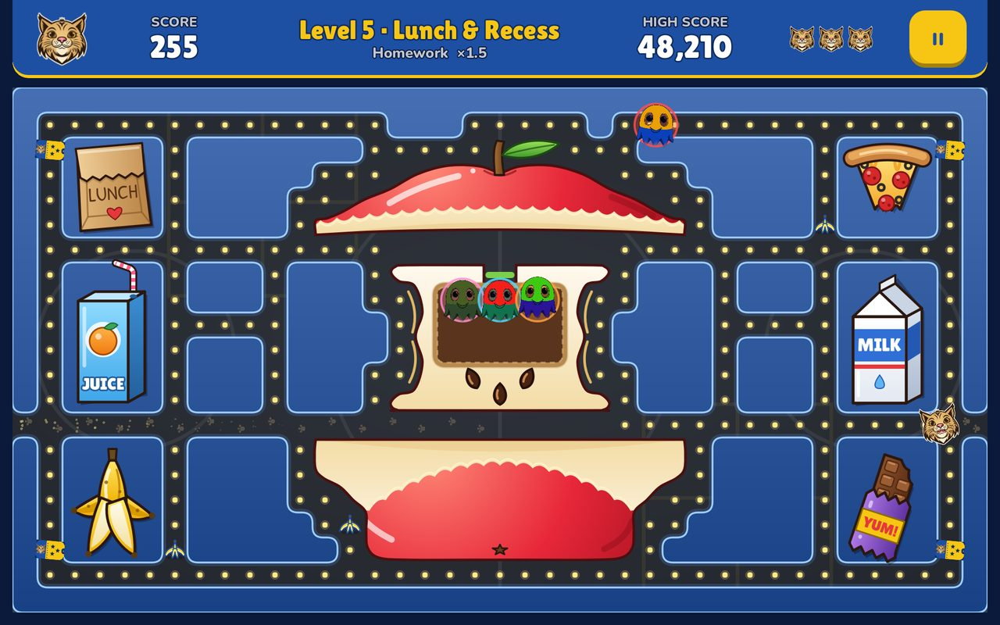
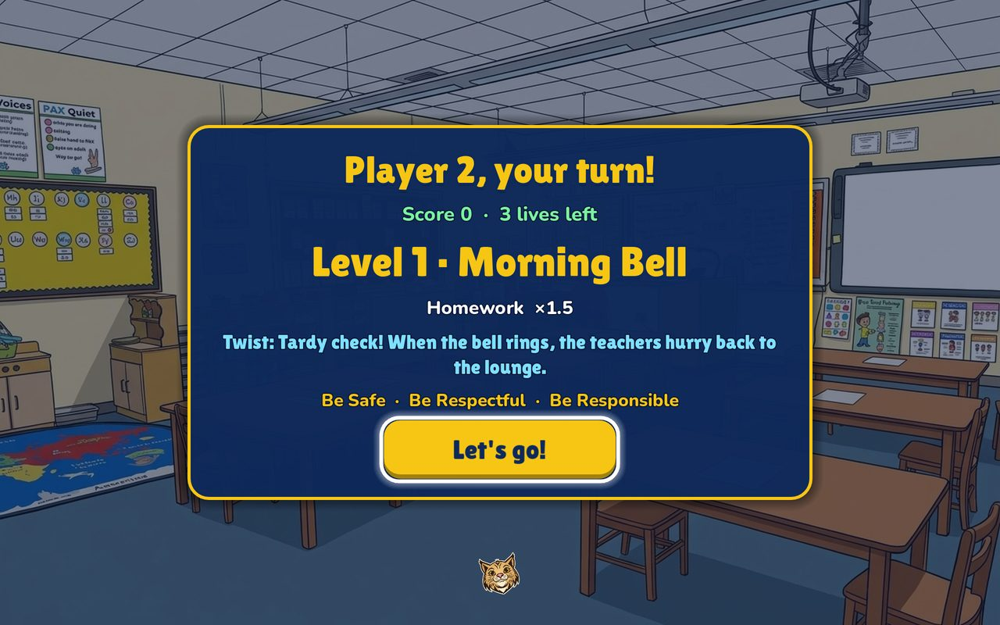

Maze of the Bobcats
Eine Labyrinth-Jagd mit Bobbie dem Rotluchs, gemacht für den Spielautomaten der Bellview Elementary School in Ashland, Oregon. Friss die Punkte, schnapp dir Bobcat Tickets und bleib den Lehrern immer einen Schritt voraus!
Für die Bellview Elementary School Spielautomat · Joystick und Knöpfe


Los, Bobcats!
Sechs Schul-Labyrinthe
Morning Bell, Math Class, Library, The Reflection Form, Lunch & Recess und Homework Time: Jedes sieht aus wie ein anderer Teil der Schule.

In jedem Labyrinth eine Überraschung
Eine Schulglocke, die die Lehrer ins Lehrerzimmer zurückschickt, Zahlen, die du der Reihe nach frisst, stille Zonen, in denen dich die Lehrer nicht sehen, Bananenschalen und mehr.
Bobcat Tickets
Schnapp dir ein Bobcat Ticket, und die Lehrer rennen ins Lehrerzimmer. Fang sie unterwegs für viele Punkte!
Echte Lehrer als freundliche Geister
Die Schule kann ihre eigenen Lehrer als Cartoon-Geister hinzufügen, jeder mit einem lustigen Spruch, wenn er dich erwischt. Ihre Bilder bleiben im Automaten und kommen nie ins Internet.

Schul-Power-ups
Ein Hall Pass, um an einem Lehrer vorbeizuschlüpfen, eine Recess Bell, die sie einfriert, flinke Sneakers und Pizza Friday, an dem jeder Punkt doppelt zählt.

Ein Stickeralbum
15 Sticker für lustige Erfolge, zum Beispiel ein Level, ohne erwischt zu werden. Tipp am Ende des Spiels deinen Namen ein, um sie zu behalten.

Bestenlisten
Die besten Punktzahlen von heute, dieser Woche und aller Zeiten, also gibt es jeden Tag einen neuen Champion.

Ein oder zwei Spieler
Spiel allein oder mit einem Freund: abwechselnd, jeder mit seinem eigenen Labyrinth, oder als Team im selben Labyrinth.

Gemacht für einen Spielautomaten
Ein Joystick und große Arcade-Knöpfe, fünf Schwierigkeitsstufen von Recess bis Principal's Office und eine Demo, die läuft, wenn gerade niemand spielt.
Bilder aus dem Spiel






So wird gespielt
Friss jeden Punkt. Steuere Bobbie mit dem Joystick (oder wische über den Bildschirm) und friss alle Punkte, um das Labyrinth zu schaffen. Ab und zu taucht ein Leckerbissen für Extrapunkte auf.
Pass auf die Lehrer auf. Wenn ein Lehrer Bobbie erwischt, verlierst du ein Leben. Jeder Lehrer jagt dich auf seine eigene Art, und sie werden mit der Zeit schneller und schlauer.
Dreh den Spieß um. Friss ein Bobcat Ticket in einer Ecke, und die Lehrer rennen zurück ins Lehrerzimmer. Fang sie unterwegs: Jeder weitere hintereinander bringt mehr Punkte.
Schaff alle sechs Labyrinthe und starte Runde 2, ein bisschen schneller. Wie weit kommst du?
Maze of the Bobcats wurde nur für den Spielautomaten der Bellview Elementary School gemacht und ist deshalb nicht zum Herunterladen erhältlich. Das Spiel ist auf Englisch.